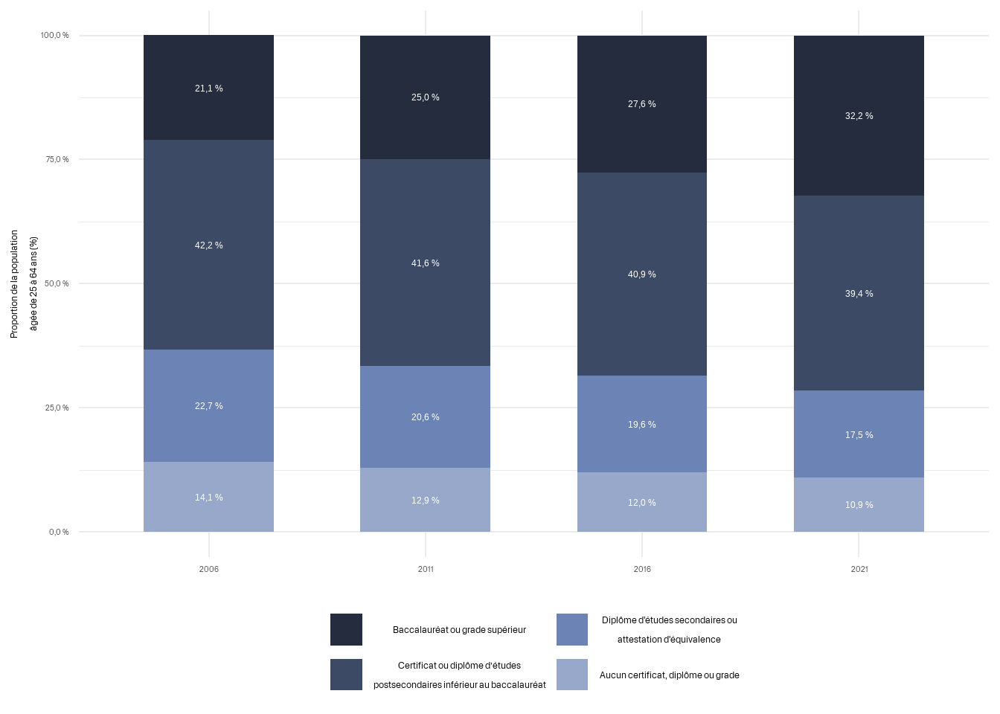

2 Axe 1: Les conditions de vie et les inégalités sociales
2.1 Immigration et diversité ethnoculturelle
Chaque année, Laval accueille des milliers de nouveaux·elles arrivant·e·s, illustrant une tendance constante d’augmentation de la population immigrante au cours des 25 dernières années. Cette croissance souligne le rôle de Laval comme destination majeure pour les immigrant·e·s au Québec. En effet, la proportion de la population lavalloise qui est composée d’immigrant·e·s a augmenté de façon significative au cours des 25 dernières années, et plus particulièrement depuis 2001 (graphique 2.1)7.
Figure 2.1: Pourcentage de la population qui est immigrante à Laval, Montréal et au Québec (1996 - 2021)
Selon le recensement de 2021, près d’un tiers (31,5 %) de la population de Laval était constituée d’immigrant·e·s, contre 33,4 % à Montréal et 14,6 % dans l’ensemble du Québec. Le graphique 2.2 montre la répartition spatiale de la population immigrée de Laval, avec des proportions plus élevées dans et autour du secteur d’aménagement Chomedey.
Figure 2.2: Proportion d’immigrants dans la population (2021)
Figure 2.3: Proportion d’immigrants récents dans la population (2021)
2.1.1 Les statuts d’immigration
À Laval en 2021, Les résidents non permanents ne représentaient qu’une très faible proportion de la population, soit environ (1,2 %) des résidents, comparativement à des figures beaucoup plus hautes à Montréal et dans l’ensemble du Québec.
| Région | Population (n) | Immigrants totaux (n) | Immigrants totaux (%) | Immigrants récents (n) | Immigrants récents (%) | Résident non permanents (n) | Résident non permanents (%) | Non-immigrants (n) | Non-immigrants (%) |
|---|---|---|---|---|---|---|---|---|---|
| Laval | 429 600 | 135 300 | 31,5 % | 16 200 | 3,8 % | 5 310 | 1,2 % | 288 900 | 67,3 % |
| Montréal | 1 723 200 | 576 100 | 33,4 % | 104 000 | 6,0 % | 129 780 | 7,5 % | 1 017 300 | 59,0 % |
| Québec | 8 308 500 | 1 210 600 | 14,6 % | 202 700 | 2,4 % | 205 770 | 2,5 % | 6 892 100 | 83,0 % |
Définition: Immigrant·e récent·e - Un·e immigrant·e récent·e est un·e immigrant·e qui a obtenu le droit d’établissement moins de 5 ans avant le recensement de 2021 8
Définition: Résident·e non permanent - Résident·e non permanent·e désigne une personne d’un autre pays dont le lieu de résidence habituel est le Canada et qui est titulaire d’un permis de travail ou d’un permis d’études ou qui a demandé le statut de réfugié (demandeur d’asile). 9
2.1.2 Citoyenneté
Bien que les niveaux d’immigration soient plus élevés à Laval que dans le reste de la province, les taux de citoyenneté sont toutefois similaires. En effet, la grande majorité des résident·e·s de Laval (93,1 %) sont des citoyen·ne·s canadien·ne·s, une proportion similaire à l’ensemble du Québec (93,8 %).10
2.1.3 Période d’immigration
Définition: Période d’immigration - La période d’immigration désigne la période pendant laquelle l’immigrant·e a obtenu son statut d’immigrant·e ou de résident permanent pour la première fois. 11
Le graphique 2.4 illustre la répartition de la proportion de la population immigrante totale à Laval et au Québec en fonction de la période d’arrivée. Chaque barre représente la proportion de la population totale actuelle qui a immigré au cours de chaque période spécifiée. En ce qui concerne la population immigrante lavalloise, l’afflux le plus important s’est produit entre 2001 et 2010, cette décennie représentant le pourcentage le plus élevé de la population immigrante actuelle. 12

Figure 2.4: Période d’immigration à Laval et au Québec (2021)
2.1.4 Catégorie d’admission
Les quatre catégories d’admission sont les suivantes : immigrant·e économique, immigrant·e parrainé·e par la famille, réfugié·e et autre. À Laval, similaire à l’ensemble du Québec, la moitié (49,7 %) de la population immigrante appartient à la catégorie de l’immigration économique. 13 Cela signifie qu’ils ont été sélectionnés en raison de leur potentiel à contribuer à l’économie canadienne en répondant aux besoins du marché du travail, en gérant des entreprises, en faisant des investissements ou en répondant à des demandes spécifiques régionales. Comparativement à la province, Laval compte une plus grande proportion de réfugié·e·s au sein de sa population immigrante.
Figure 2.5: Population immigrée par catégorie d’admission (2021)
Note. Catégorie d’admission et type de demandeur pour la population immigrée dans les ménages privés qui a été admise entre 1980 et 2021.
2.1.5 Âge à l’immigration
Le groupe d’âge le plus représenté parmi les résident·e·s immigrant·e·s est de loin celui des 25 à 44 ans. Bien que toutes les catégories d’âge montrent un équilibre entre les genres, la catégorie des 15 à 24 ans ne respecte pas cette tendance. En effet, il y a plus de femmes que d’hommes qui immigrent dans le groupe d’âge des adolescents et jeunes adultes, comme au niveau des 45 ans et plus, bien qu’à plus petite proportion.
Figure 2.6: Âge à l’immigration (2021)
2.1.6 Origines ethniques
Avant 1980, la plupart des immigrant·e·s de Laval venaient d’Italie, de Grèce ou d’Haïti. Au fil des années, les origines des nouveaux·elles arrivant·e·s à Laval ont changé. En 2021, un·e immigrant·e sur trois (35,4 %) était né·e dans un pays d’Asie (y compris le Moyen-Orient) 14. Les autres immigrant·e·s proviennent principalement de pays africains (23,0 %), de pays européens (21,9 %) et des Caraïbes ou d’Amérique centrale, du Sud et latine (18,7 %).
Si l’on se concentre directement sur la population immigrée récente, on constate une augmentation du nombre d’immigrant·e·s originaires de pays asiatiques et une diminution du nombre d’immigrés originaires d’Europe et des Caraïbes ou d’Amérique centrale, du Sud et d’Amérique latine (graphique 2.7). Les immigrant·e·s né·e·s en Asie représentent 52,6 % de la population des immigrant·e·s récent·e·s, suivis par les immigrant·e·s né·e·s en Afrique (25,7 %). La moitié des nouveaux·elles arrivant·e·s sont né·e·s dans l’un de ces cinq pays : Syrie (27,1 %), Liban (5,9 %), Algérie (5,8 %), Haïti (5,4 %) ou Maroc (5,0 %).
Figure 2.7: Lieu de naissance de la population immigrée récente et totale (2021)
2.1.7 Minorités visibles
En 2021, le tiers (32,7 %) de la population de Laval appartenait à une minorité visible, comparativement à 16,1 % pour l’ensemble de la province 15. La répartition de la population des minorités visibles est illustrée dans le Graphique 2.8, les personnes arabes (11,4 %) et noires (8,9 %) représentant la grande proportion du groupe des minorités visibles.
Définition: Minorité visible - Une personne appartenant à une minorité visible est une personne, autre qu’un autochtone, qui ne sont pas de race blanche ou qui n’ont pas la peau blanche. 16
Figure 2.8: Répartition de la population appartenant à une minorité visible (2021)
2.1.8 Appartenance religieuse
Les résident·e·s laïques ou non religieux représentaient 18,0 % de la population lavalloise en 2021, tandis qu’au Québec, plus de 27,3 % de la population était laïque ou non religieuse. La religion la plus répandue à Laval était le christianisme, qui représentait près des deux tiers (65,4 %) de la population (64,8 % pour la province) 17. La deuxième religion la plus répandue à Laval était l’islam, qui représentait 12,9 % de la population, comparativement à la province où elle ne représentait qu’environ 5,1 %.
2.2 Langues
Pour une analyse approfondie du paysage linguistique de Laval, nous examinons diverses mesures de l’utilisation des langues. Chaque mesure fournit des informations sur les diverses facettes de l’utilisation des langues: comment les langues sont apprises, utilisées à la maison et utilisées au travail. Ainsi, les mesures suivantes permettent d’illustrer non seulement les langues parlées, mais aussi la profondeur et le contexte de leur utilisation dans différents environnements, qu’il s’agisse d’environnement personnels ou professionnels.
2.2.1 Connaissance des langues officielles du Canada
Selon la loi québécoise, la seule langue officielle et commune du Québec est le français. Toutefois, pour les besoins de notre analyse et l’utilisation des données du recensement canadien, nous employons le terme “langues officielles” tel que défini par Statistique Canada, qui reconnaît à la fois le français et l’anglais comme langues officielles.
Ainsi, en ce qui concerne la connaissance des langues officielles du Canada telles que définies par le recensement canadien, Laval compte notamment une plus grande proportion de personnes bilingues (français et anglais) que l’ensemble du Québec, et cette proportion a augmenté de façon constante au fil du temps, passant de 51,3 % en 1996 à 60,3 % en 2021. La proportion de la population qui ne parle aucune des deux langues a également augmenté au fil du temps, passant de 1,4 % à 2,1 %. La connaissance du français à Laval a connu un recul lent mais constant au cours des 20 dernières années, comme en témoigne l’augmentation des catégories Aucune et Anglais dans le graphique 2.9. Ces changements soulignent la progression de Laval vers une communauté plus diversifiée sur le plan linguistique.
Définition : Connaissance des langues officielles du Canada - Connaissance des langues officielles désigne la capacité d’une personne de soutenir une conversation en français seulement, en anglais seulement, dans les deux langues, ou dans ni l’une ni l’autre.18
Figure 2.9: Evolution de la connaissance des langues officielles à Laval (1996-2021)
La graphique 2.10 montre la proportion de personnes qui connaissent le français à Laval et dans l’ensemble du Québec. La proportions d’individus qui connaissent le français dans les deux géographies est semblables: 92,1 % des Lavallois·es parlent suffisamment bien le français pour soutenir une conversation, comparativement à 93,7 % des Québécois·e·s. Laval affiche un taux de bilinguisme significativement plus élevé parmi ses résident·e·s (60,3 %), comparativement à l’ensemble du Québec (46,4 %). La proportion de locuteurs exclusivement francophone est plus faible à Laval (31,8 %) que dans la population québécoise (47,3 %)
Figure 2.10: Connaissances des langues officielles à Laval et au Québec (2021)
2.2.2 Population d’expression de langue anglaise
Au Québec, la population d’expression anglaise désigne les personnes qui utilisent principalement l’anglais dans leurs interactions quotidiennes, que ce soit à la maison, au travail ou dans des contextes sociaux.19 Ce terme vise spécifiquement ceux qui, en raison de leurs préférences linguistiques, pourraient nécessiter des services en anglais pour répondre adéquatement à leurs besoins de santé et sociaux. Bien que ce sont 5,8 % des Lavallois·es qui ne connaissent que l’anglais, une partie des 60,3 % bilingues peuvent quand même faire partie de la communauté d’expression anglaise.
Ainsi, en 2021, la communauté lavalloise d’expression anglaise comptait 104 520 personnes, représentant près d’un quart (24,0 %) de la population de la ville.20 De 2006 à 2021, le nombre de Lavallois·es d’expressions anglophones a augmenté de 52,7 %, passant de 18,8 % à 24,0 % de la population.21 Depuis 2006, la proportion d’anglophones à Laval reste supérieure à celle observée dans l’ensemble du Québec.22
2.2.3 Langue la plus souvent parlée à la maison
Le français est de loin la langue la plus souvent parlée à la maison, mais elle fait face à un recul depuis 2001. D’ailleurs, la proportion de la population qui parle une langue autre que le français ou l’anglais à la maison est beaucoup plus élevée à Laval (19,5 %) qu’au Québec (8,2 %), et cette proportion est en croissance depuis les 20 dernières années. Ces autres langues, regroupées sous la catégorie “Autres” dans le graphique 2.11, connaissent la croissance la plus rapide parmi les trois groupes de langues (français, anglais et autres) parlés à la maison à Laval, passant de 9,6 % à 19,5 % en 20 ans. Au cours de la même période, la proportion de locuteurs anglophones a aussi plus que doublé, passant de 6,8 % à 16,1 %.
Figure 2.11: Langues parlées le plus souvent à la maison à Laval (2021)
La carte de gauche du graphique 2.12 montre la dominance des langues plus souvent parlées à la maison par zone. La couleur d’une zone indique la langue qui est la plus fréquemment parlée à la maison, même si cette langue ne représente pas nécessairement la majorité absolue des locuteurs. Par exemple, si dans une zone, 40% de la population parle une langue autre que le français ou l’anglais, 30% parle français et 30% parle anglais, ce secteur sera coloré en jaune (Autres langues) car cette catégorie est la plus répandue, bien qu’aucune langue n’atteigne la majorité. Ainsi, l’opacité de chacune des couleurs indique combien de locuteurs dans la zone parle cette langue.
Cette même carte de gauche du graphique 2.12 montre donc une prédominance du français, représenté en bleu, comme langue la plus souvent parlée à la maison dans la plupart des zones. Toutefois, le secteur de Chomedey montre une forte mixité linguistique par la dominance d’autres langues, représentées en jaune. Le secteur Chomedey se distingue donc par une diversité linguistique marquée, où les autres langues dominent par rapport au français et à l’anglais, bien que leur utilisation n’atteint une majorité que dans quelques zones.
La carte de droite illustre cette diversité à un niveau plus granulaire, avec chaque point représentant 10 individus. On y voit toujours la prédominance du français, mais aussi la dispersion des différentes langues à travers Laval, avec une concentration notable de locuteurs d’autres langues dans Chomedey, où les points jaunes se regroupent.
Figure 2.12: Langue parlée le plus souvent à la maison par zone (gauche), Langue parlée le plus souvent à la maison par individu (1 point = 10 individus) (droite)
2.2.4 Les langues parlées au travail
Bien que l’anglais et les langues non officielles soient utilisés par près d’un tiers des Lavallois·es au travail, la langue la plus souvent utilisée est le français. Effectivement, en 2021, 79,4 % des individus utilisaient le plus souvent le français au travail, ce qui est inférieur aux 84,3 % de la province de Québec. L’anglais, en tant que langue principale utilisée au travail, est plus répandu parmis les Lavallois·es, où il est utilisé par 19,6 % de la main-d’œuvre, comparativement à 19,6 % au Québec. L’utilisation des langues non officielles est minime dans les deux régions.
2.3 Familles et ménages
2.3.1 Les familles lavalloises
2.3.1.1 Caractéristiques des familles
Bien qu’il y ait plus de petites familles (de trois personnes) que de familles nombreuses (de quatre personnes et plus) tant à Laval qu’au Québec, la proportion de familles nombreuses est plus élevée à Laval (33,5 %) qu’au Québec (25,8 %).
En 2021, la taille moyenne d’une famille lavalloise était de 3 personnes par famille, comparativement à 2.8 pour l’ensemble du Québec. Le graphique 2.13 illustre la répartition de la taille des familles à Laval au cours des 25 dernières années. Les familles composées de deux personnes ont toujours représenté environ 45 % de la population. La proportion des familles de trois membres, bien que généralement restée entre 20 et 25 %, a connu une légère baisse depuis les derniers 25 ans, avec une augmentation des unités familiales plus grandes depuis lors. Dans le même temps, la proportion des familles de cinq membres ou plus, tout en restant le groupe le plus petit, a affiché une tendance progressive à la hausse, dépassant les 5 % et suggérant une croissance lente mais persistante vers des ménages plus nombreux. Ces observations reflètent une stabilité des ménages de petite taille à Laval, associée à une augmentation progressive des structures familiales de grande taille au fil du temps.
Figure 2.13: Évolution de la taille des familles à Laval (1996-2021)
En 2021, Laval comptait 53 100 couples avec enfants. La proportion de couples lavallois avec au moins un enfant (57,9 %) avait légèrement diminué depuis 2016 (58,6 %). Au Québec, il y a aussi eu une diminution de 48,3 % (2016) à 46,4 % (2021), en plus d’une baisse significative observée depuis 2006. Le nombre moyen d’enfants par famille à Laval est le même que celui du Québec, soit 1.80.
2.3.1.2 Structure de la famille
La plupart des familles lavalloises sont composées de couples mariés (61,3 %), comparativement à un peu moins de la moitié (47,8 %) au Québec, où les couples optent à plus haut taux pour l’union civile.
À Laval, les familles avec enfants sont aussi plus susceptibles d’être mariées que dans le reste du Québec, où la proportion de couples mariés et de couples en union libre avec enfants est plus similaire. De plus, la plupart des couples mariés de Laval ont des enfants (62,1 %), ce qui n’est pas la réalité dans l’ensemble de la province.
Figure 2.14: Composition de la famille à Laval et au Québec par type de famille (2021)
2.3.1.3 Familles monoparentales
Les familles monoparentales constituaient moins d’un cinquième de l’ensemble des familles de Laval (17,2 %) en 2021, une proportion légèrement supérieure à la moyenne provinciale (16,5 %). Parmi ces 20 700 familles, la majorité, soit 78,0 %, étaient dirigées par des femmes, un chiffre également au-dessus de la moyenne provinciale. Les femmes à la tête de ces familles sont presque 9 fois plus nombreuses à vivre sous le seuil de faible revenu, selon la mesure de faible revenu après impôts (MFR-ApI), comparé à leurs homologues masculins (6 020 contre 670). Ce sont 15,4 % des mères monoparentales qui se retrouvaient dans cette situation de précarité, un taux nettement plus élevé que celui observé chez les pères monoparentaux (5,8 %).
La monoparentalité a légèrement augmenté, aussi bien à Laval que dans l’ensemble du Québec. À Laval, la part des familles monoparentales parmi celles ayant au moins un enfant est passée de 25,6 % en 2006 à 26,3 % en 202123. Depuis 2006, les proportions dans l’ensemble du Québec sont plus élevées que celles de Laval24.
2.3.1.4 Les ménages lavallois
En 2021, Laval comptait 169 800 ménages, marquant une augmentation de 9 460 (+5,9 %) depuis 2016. Historiquement, les ménages lavallois sont plus grands que ceux dans l’ensemble du Québec. En 2021, la taille moyenne des ménages lavallois était de 2,5 personnes, alors qu’elle était de 2,2 au Québec. La distribution de la taille des ménages reflète cette différence. Le graphique 2.15 indique ces différences de distribution. En effet, on y retrouve des pourcentages plus élevés de ménages de trois, quatre et cinq personnes et plus à Laval, ce qui correspond à la tendance des familles plus nombreuses.
Figure 2.15: Taille des ménages à Laval et au Québec (2021)
Le graphique 2.16 ci-dessous montre l’évolution de la taille des ménages. Il y avait davantage de ménages de petite taille à Laval en 2021, bien qu’ils contiennent moins d’individus. Un nombre plus élevé d’individus vivaient dans des ménages de quatre personnes ou plus, mais il y a davantage de ménages d’une ou deux personnes.
Figure 2.16: Evolution de la taille des ménages à Laval (1996-2021)
2.3.1.5 Personnes vivant seules
En 2021, 47 400 (15,9 %) Lavalloise·e·s vivaient seul·e·s25. Après une hausse entre 2006 et 2016, les proportions de personnes vivant seules ont diminué entre 2016 et 2021, passant de 12,4 % à 11,0 %26. Cette tendance est également visible dans l’ensemble du Québec. Cependant, Laval présente des proportions de personnes vivant seules inférieures à celles observées dans l’ensemble du Québec (11 %)27.
2.4 Développement des enfants
2.4.1 Vulnérabilité des enfant à la maternelle
Selon l’Enquête québécoise sur le développement des enfants à la maternelle (2022), un peu plus du tiers (34, 0 %) des enfants lavallois fréquentant la maternelle sont considérés comme vulnérables dans au moins un domaine de développement.28 Entre 2017 et 2022, la proportion d’enfants vulnérables dans au moins un domaine de développement a augmenté d’environ 3 points de pourcentage. Elle était de 31,3 % en 2017.29
L’instrument de mesure du développement de la petite enfance (IMDPE) évalue les aptitudes des enfants de la maternelle selon cinq domaines de développement : 1. La santé physique et le bien-être ; 2. Les compétences sociales ; 3. La maturité affective ; 4. Le développement cognitif et langagier 5. Les habiletés de communication et les connaissances générales
Figure 2.17: Vulnérabilité des enfants fréquentant la maternelle à Laval et au Québec (2022). Données : Institut de la statistique du Québec, Enquête québécoise sur le développement des enfants à la maternelle (2022)
La proportion d’enfants vulnérables à la maternelle est supérieure à Laval dans tous les domaines de développement, par rapport à l’ensemble de la province. Le domaine des habiletés de communication et les connaissances générales présente le taux de vulnérabilité le plus élevé avec 17,1 % des enfants lavallois de la maternelle 5 ans considérés comme vulnérables.30 Ce domaine affiche également le plus grand écart entre les proportions lavalloise et québécoise en termes de vulnérabilité.
2.4.1.1 Littératie
En 2022, 12,1 % des enfants dans l’ensemble de la province du Québec étaient considérés comme vulnérables dans le domaine du « Développement cognitif et langagier ».31 Cependant, à Laval, cette proportion était non seulement plus élevée que la moyenne provinciale, atteignant 14,4 %, mais elle représentait également le taux le plus élevé du Québec.32
À Laval, la proportion d’enfants qui ont été moins engagés dans des activités de littératie l’année précédant la maternelle 5 ans s’élevait à 17,8 %.33 Cette proportion est également plus élevée que la moyenne provinciale, qui se situe à 15,3 %.34 De plus, 4,8 % des enfants lavallois n’avaient pas eu accès à une bibliothèque l’année précédant l’Enquête québécoise sur le parcours préscolaire des enfants à la maternelle 2022, autre indicateur qui dépasse la moyenne provinciale de 3,6 %.35
2.4.1.2 Répartition de vulnérabilité selon le sexe
En 2022, les garçons de Laval fréquentant la maternelle 5 ans étaient plus susceptibles d’être vulnérables dans au moins un domaine de développement, 42,7 % d’entre eux présentant de la vulnérabilité, comparativement à 25,2 % des filles du même âge.36 Cette tendance se reflète dans l’ensemble du Québec, où 35,6 % des garçons et 21,6 % des filles présentent une vulnérabilité similaire en matière de développement.37
2.4.2 Le temps d’écran
Selon une enquête réalisée en 2022, 21,8 % des enfants lavallois fréquentant la maternelle 5 ans passent en moyenne plus de deux heures par jour devant des écrans, une proportion nettement supérieure que dans l’ensemble du Québec (15,9 %).38 En 2023, près de la moitié (45%) des enfants québécois âgés de 6 à 17 ans passent plus de dix heures par semaine sur Internet.39 De plus, environ un tiers des enfants (32 %) y consacrent plus de quinze heures par semaine. 40
Au fur et à mesure que les enfants entrent dans l’adolescence, leur temps passé devant un écran tend à augmenter de manière significative. Plus précisément, 59 % des adolescents passent plus de 10 heures par semaine sur internet, contre seulement 33 % des enfants âgés de 6 à 12 ans.41 Cette augmentation du temps d’écran chez les adolescents pourrait être en partie attribuée aux besoins éducatifs, car les activités scolaires et les devoirs nécessitent souvent un accès à l’internet.
Figure 2.18: Heures par semaine passées sur Internet, enfants d’âge scolaire de 6 à 12 ans et de 13 à 17 ans (Québec). Données: Famille numérique, Édition 2023 (Académie de la transformation numérique)
2.5 Emploi et chômage
Le dernier recensement en 2021 a eu lieu pendant la pandémie. Les tendances en matière d’emploi et de chômage présentées dans cette section doivent être interprétées en gardant cette influence à l’esprit.
2.5.1 Taux d’emploi
En 2021, Laval a vu son taux d’emploi chez la population active diminuer, passant de 61,7 % en 2016 à 60,0 % en 2021, soit une baisse de 1,7 point de pourcentage, poursuivant ainsi la tendance à la baisse des taux d’emploi depuis 2006 (graphique 2.19). En comparaison, bien que l’ensemble du Québec avait un taux d’emploi inférieur à celui de Laval, soit de 59,3 %, le Québec n’a connu qu’une baisse de 0,2 point.
Définition : Taux d’emploi - Le taux d’emploi est le pourcentage de la population en âge de travailler (les personnes âgées de 15 ans et plus) qui à l’emploi. Définition : Population active - La population active correspond à la population civile non institutionnelle âgée de 15 ans et plus, ayant un emploi ou étant au chômage.
Figure 2.19: Taux d’emploi à Laval et au Québec (2001-2021). Source: Statistique Canada.
2.5.2 Travail pendant l’année de référence
Alors que le nombre de personnes travaillant à temps plein a augmenté de 9,1 % (10 160), passant de 111 865 (31,6 %) en 2016 à 122 025 (34,4 %) en 2021, le nombre de personnes travaillant à temps partiel ou seulement une partie de l’année a diminué de -6,0 % (-7 000) au cours de la même période. De plus, le nombre de personnes ne travaillant pas du tout a augmenté de 12,6 % (13 770), passant de 109 115 (30,8 %) en 2016 à 122 885 (34,7 %) en 2021. Il y a donc eu une diminution nette du nombre de Lavallois·es ayant un emploi.
2.5.3 Taux de chômage
La baisse du nombre d’individus employés à Laval a conduit à une augmentation du nombre de personnes au chômage. De 2016 à 2021, le taux de chômage à Laval est passé de 7,0 % à 8,6 %. Cette augmentation marque la troisième année de recensement consécutive où une hausse est observée. En comparaison, le taux de chômage du Québec est passé de 7,2 % à 7,6 %. Laval a connu une augmentation plus marquée, et son taux de chômage est devenu supérieur à celui de l’ensemble de la province.
Définition : Taux de chômage - Le taux de chômage est le pourcentage de la population active qui est au chômage.
Figure 2.20: Taux d’emploi de 2001 à 2021 à Laval et dans la province de Québec. Source: Statistique Canada.
2.5.3.1 Évolution récente du taux de chômage
Les estimations mensuelles désaisonnalisées de l’Enquête sur la population active (EPA) de Statistique Canada, adaptées et compilées par l’Institut de la statistique du Québec (ISQ)[^1], couvrant jusqu’à l’été 2024, montrent une tendance générale à la baisse du taux de chômage chez les Lavallois·es· depuis le début des années 2010, malgré des variations régulières (graphique 2.21). Le pic en 2020, lié à la pandémie de COVID-19, est particulièrement frappant, avec une augmentation soudaine et marquée du chômage, atteignant environ 14,6 %.[^Institut de la statistique du Québec. (2024). Caractéristiques du marché du travail, données mensuelles désaisonnalisées¹, régions administratives² et ensemble du Québec. Récupéré de statistique.quebec.ca/fr/produit/tableau/916]
## `geom_smooth()` using method = 'loess' and formula = 'y ~ x'Figure 2.21: Taux d’emploi à Laval (2006-2024). Source: Institut de la statistique du Québec..
Depuis ce sommet, le taux de chômage a progressivement diminué, mais les données montrent une reprise avec quelques fluctuations. Ces observations suggèrent que le marché du travail à Laval est encore en phase de stabilisation après le choc de 2020. Bien que les données de l’ISQ et de l’EPA soient basées sur des méthodologies rigoureuses et largement utilisées pour suivre les tendances du marché du travail, ces chiffres doivent être interprétés avec prudence en raison des défis méthodologiques liés à la taille des échantillons et aux conditions d’enquête pendant et après la pandémie.
2.5.4 L’évolution de la population active
La population active a augmenté de 3,8 % entre 2016 (223 995) et 2021 (232 550). Cependant, cette croissance est nettement inférieure à celle de la population inactive de 7,4 %, passant de 113 500 en 2016 à 121 865 en 2021. La période 2016-2021 a connu la plus faible croissance de la population active observée au cours des deux dernières décennies, tout en enregistrant un pic de croissance de la population inactive. De plus, en 2021, la proportion de la population active (65,6 %) était la plus faible depuis 2001. Le vieillissement de la population pourrait entraîner une sortie plus rapide de la population active, bien que le taux d’activité et les taux d’emploi aient progressé pour les populations âgées de 65 et plus.
2.5.6 Catégories professionnelles
Les trois catégories professionnelles les plus populaires parmi la population lavalloise sont la vente et les services (62 970 individus), les affaires, finances et administration (46 570 individus), et les métiers, transport, machinerie, et domaines apparentés (33 050 individus). Les femmes dominent largement le secteur des affaires (66,3 % des individus sont des femmes), tandis que les métiers (catégorie regroupant les superviseurs de métiers et les contremaîtres, les personnes de métier en construction et en mécanique, les opérateurs et les conducteurs de matériel de transport et de machinerie lourde, ainsi que les aides de corps de métiers)43 sont majoritairement occupés par des hommes (91,6 %). En revanche, dans la vente et les services, la répartition est presque équilibrée, avec 50,0 % de femmes et 50,0 % d’hommes.

Figure 2.22: Nombre de résidents de Laval ayant un emploi selon les secteurs de la Classification nationale des professions (2021). Source: Statistique Canada.
2.5.7 Lieux de travail et déplacements
Tant en 2016 qu’en 2021, la majorité des résident·e·s de Laval qui avaient un emploi travaillaient à l’extérieur de la ville. Toutefois, cette proportion a diminué, passant de 61,8 % en 2016 à 54,2 % en 2021. Parallèlement, la proportion de résident·e·s travaillant à Laval a connu une augmentation correspondante, passant de 38,2 % en 2016 à 45,8 % en 2021. Cette évolution peut être en partie due à la pandémie de COVID-19, qui a changé les habitudes de déplacement et rendu le télétravail plus courant et acceptable. Comme le recensement interroge sur le lieu de travail habituel, une personne qui travaille pour une entreprise située à Montréal, mais qui télétravaille depuis son domicile à Laval, sera considérée comme travaillant à Laval, potentiellement expliquant les nouveaux changements.
À l’échelle du Québec, on observe une tendance similaire, bien que plus modérée. En 2021, 53,6 % des travailleurs québécois travaillaient dans leur municipalité de résidence, une légère augmentation par rapport aux 52,2 % en 2016. Cela montre que la tendance à travailler dans sa propre municipalité s’est également renforcée au Québec, mais de manière beaucoup moins marquée qu’à Laval. De plus, les résident·e·s de Laval sont plus susceptibles de travailler à l’extérieur de leur municipalité de résidence.
L’année 2021 a aussi été marquée par une perturbation importante du lieu de travail des résident·e·s de Laval. De 2001 à 2016, le nombre de Lavallois·es travaillant à l’emplacement physique de leur lieu habituel de travail a diminué très graduellement, passant de 88,3 % à 85,1 %. En revanche, de 2016 à 2021, la baisse a été beaucoup plus importante, diminuant à 66,3 %. À l’inverse, les Lavallois·es qui travaillent à domicile sont passés de 5,8 % en 2016 à 22,8 % en 2021. Bien que ce changement ne représente peut-être pas entièrement les tendances à long terme de Laval en matière de déplacements domicile-travail en raison de la proximité du recensement avec la pandémie de COVID-19, il pourrait indiquer une évolution future vers plus de télétravail.
2.6 Scolarité
2.6.1 Évolution des inscriptions scolaires
Pour l’année scolaire 2022-2023, le nombre total d’élèves inscrits dans les différents secteurs et ordres d’enseignement à Laval s’élèvait à 70 839. Cette répartition se concentrait principalement au niveau primaire, qui accueillait 28 072 élèves, soit 39,6 % de la population étudiante. Le secondaire suivait avec 24 214 élèves, représentant 34,2 % des inscriptions. Les niveaux scolaires de la formation générale des adultes (FGA) et de la formation professionnelle (FP) accueillaient respectivement 5 931 (8,4 %) et 7 657 (10,8 %) élèves. Le préscolaire, avec 4 965 élèves, constituait 7,0 % du total.44
Entre l’année scolaire 2014-2015 et 2022-2023 à Laval, le nombre total d’élèves inscrits a augmenté, passant de 67 303 à 70 839, ce qui reflète une croissance globale de la population scolaire, suivant l’augmentation de la population globale. Un changement notable est la diminution marquée du nombre d’élèves inscrits en formation générale des adultes (FGA) et en formation professionnelle (FP). En 2014-2015, la FGA comptait 7 458 élèves, soit 11,1 % du total, alors qu’en 2022-2023, ce chiffre a chuté à 5 931 élèves, représentant seulement 8,4 % de la population étudiante. De même, les inscriptions en formation professionnelle ont diminué, passant de 8 191 élèves (12,2 %) à 7 657 élèves (10,8 %).45
En comparaison avec l’ensemble du Québec, Laval se distingue légèrement par une proportion plus élevée d’élèves inscrits en formation professionnelle (8,5 % pour le Québec contre 10,8 % à Laval), suggérant une orientation vers des filières techniques et professionnelles plus marquée à Laval.46
Le graphique 2.23 compare l’évolution du nombre d’élèves inscrits dans les secteurs et ordres d’enseignement à Laval et au Québec entre 2014-2015 et 2022-2023, en utilisant une base 100 pour l’année de départ. L’indice de 100 signifie que le nombre d’élèves en 2014-2015 sert de référence. Par exemple, un indice de 105 en 2022-2023 indique une augmentation de 5 % par rapport à 2014-2015.
Tandis que pour l’ensemble du Québec, la courbe montre une croissance régulière du nombre d’élèves, atteignant une augmentation de 7,3 % depuis 2014-2015, la croissance à Laval a été plus irrégulière. Après une augmentation initiale plus marquée, le nombre d’élèves a connu une baisse entre 2017 et 2019, puis a repris sa progression. En 2022-2023, le nombre d’élèves à Laval était 5,3 % plus élevé qu’en 2014-2015.47
Figure 2.23: Évolution du nombre d’élèves inscrits à Laval et au Québec de 2014-2015 à 2022-2023 (Indice base 100 en 2014-2015). Source: Institut de la Statistique du Québec.
2.6.2 Niveau de scolarité
2.6.2.1 Évolution du niveau de scolarité
Les données sur la population âgée de 25 à 64 ans montrent une nette augmentation des niveaux de scolarité entre 2006 et 2021. À Laval, la proportion de personnes sans diplôme a graduellement diminué de 14,1 % en 2006 à 10,9 % en 2021. Pendant la même période, la proportion de la population ayant un diplôme universitaire (baccalauréat ou supérieur) a augmenté de 21,1 % à 32,2 %. Les tendances sont similaires dans l’ensemble du Québec, avec une baisse de la proportion de la population sans diplôme de 17,1 % en 2006 à 11,8 % en 2021, et une augmentation de la proportion de diplômés de niveau baccalauréat ou supérieur de 20,8 % à 29,5 %. Laval se distingue donc légèrement par une plus faible proportion d’individus sans diplôme et une proportion plus élevée de diplômés universitaires.

2.6.2.2 Niveau de scolarité selon le genre
Le graphique 2.24 illustre la répartition des niveaux de scolarité parmi la population de 25 à 64 ans à Laval en 2021. Les femmes surpassaient les hommes en termes de scolarité supérieure : 34,9 % des femmes détiennent un baccalauréat ou un grade supérieur contre 29,5 % des hommes. À l’inverse, les hommes sont plus nombreux à n’avoir aucun diplôme (12,4 % contre 9,5 % pour les femmes) ou à détenir uniquement un diplôme d’études secondaires.
Figure 2.24: Répartition des niveaux de scolarité par genre chez les 25 à 64 ans à Laval (2021)
2.6.2.3 Répartition géographique des niveaux de scolarité
Les cartes du graphique 2.25 montrent la répartition géographique à Laval des individus âgés de 25 à 64 ans, en fonction de leur niveau de scolarité. La carte de gauche illustre la proportion de la population ayant obtenu un diplôme universitaire, tandis que la carte de droite représente la proportion de la population n’ayant obtenu aucun certificat, diplôme ou grade ni l’équivalent. Les zones avec une proportion plus élevée de diplômés universitaires se concentrent principalement dans les zones au nord, centre et ouest de Laval. Les zones avec des proportions plus élevées d’individus sans diplôme se trouvent majoritairement dans le centre-sud de l’île, particulièrement dans le secteur Chomedey.

Figure 2.25: Répartition géographique des niveaux de scolarité à Laval : Diplômés universitaires (gauche) et aucun diplôme (droite) (Population âgée de 25 à 64 ans) (2021)
Le tableau ?? indique les niveaux de scolarité des individus âgés de 25 à 64 ans à Laval, répartis par secteur. Le secteur de Chomedey affiche le taux le plus élevé de personnes sans diplôme (15,5 %), tandis que Sainte-Rose, Fabreville a le taux le plus bas (7,8 %). En termes de scolarisation postsecondaire, Sainte-Rose, Fabreville se démarque également, avec 75,7 % des résidents détenant un tel diplôme, contre seulement 65,0 % à Chomedey. Enfin, le secteur Laval-Ouest, Sainte-Dorothée et Laval-sur-le-Lac se distingue avec la plus forte proportion de diplômés universitaires (34,2 %), tandis que Duvernay, Saint-Vincent-de-Paul, Saint-François, Vimont, Auteuil et Chomedey présentent des pourcentages légèrement inférieurs à la moyenne lavalloise.
| Zone géographique | Aucun diplôme (n) | Aucun diplôme (%) | Diplôme d'études secondaires ou équivalent (n) | Diplôme d'études secondaires ou équivalent (%) | Diplôme postsecondaire ou équivalent (n) | Diplôme postsecondaire ou équivalent (%) | Diplôme universitaire (n) | Diplôme universitaire (%) |
|---|---|---|---|---|---|---|---|---|
| Région | ||||||||
| Ensemble du Québec | 525 160 | 11,8 % | 3 909 400 | 88,2 % | 3 156 500 | 71,2 % | 1 307 220 | 29,5 % |
| Ville de Laval | 24 970 | 10,9 % | 203 800 | 89,1 % | 163 800 | 71,6 % | 73 760 | 32,2 % |
| Secteur | ||||||||
| Duvernay, Saint-Vincent-de-Paul, Saint-François | 2 860 | 9,0 % | 28 700 | 90,8 % | 23 100 | 73,1 % | 9 680 | 30,6 % |
| Vimont, Auteuil | 2 710 | 8,5 % | 29 000 | 91,3 % | 23 500 | 73,9 % | 9 850 | 31,0 % |
| Laval-Ouest, Sainte-Dorothée, Laval-sur-le-Lac | 3 660 | 10,0 % | 33 000 | 89,9 % | 26 700 | 72,7 % | 12 540 | 34,2 % |
| Chomedey | 7 200 | 15,5 % | 39 200 | 84,5 % | 30 100 | 65,0 % | 13 960 | 30,1 % |
| Sainte-Rose, Fabreville | 3 130 | 7,8 % | 36 900 | 92,2 % | 30 300 | 75,7 % | 13 900 | 34,7 % |
| Laval-des-Rapides, Pont-Viau | 5 330 | 12,6 % | 37 100 | 87,5 % | 30 100 | 71,1 % | 13 760 | 32,5 % |
2.6.3 Sorties sans diplôme ni qualification
Le graphique 2.26 présente l’évolution des taux de sorties sans diplôme ni qualification au secondaire en formation générale des jeunes pour les élèves du réseau public à Laval et dans l’ensemble du Québec, répartis par genre, entre les années scolaires 2013-2014 et 2021-2022.
À Laval, le taux de décrochage global a diminué de manière significative au début de la période observée, passant de 16,1 % en 2013-2014 à 13,4 % en 2015-2016. Après cette baisse, le taux a fluctué légèrement, se stabilisant à 14,0 % en 2021-2022. En ce qui concerne les différences de genre, le taux de décrochage pour les garçons reste systématiquement plus élevé que pour les filles. En 2021-2022, le taux pour les garçons était de 17,9 %, contre 10,3 % pour les filles. Cette disparité persistante entre les sexes est visible tout au long de la période observée.48
Le taux de décrochage à l’échelle provinciale est systématiquement plus élevé qu’à Laval. En 2021-2022, le taux global pour le Québec était de presqu’un élève sur 5, soit de 18,2 %. Cette différence est également présente dans les taux par genre. Pour les garçons au Québec, le taux de décrochage a atteint 22,4 % en 2021-2022, tandis que pour les filles, il était de 14,1 %.49
Figure 2.26: Taux de décrochage scolaire à Laval et au Québec par genre (2013-2014 à 2021-2022). Source: Institut de la Statistique du Québec.
2.7 Logement et habitation
2.7.1 Statut d’occupation
À Laval, la proportion de ménages propriétaires a longtemps été élevée. En 2016, 69,4 % des ménages étaient propriétaires de leur logement, contre 66,4 % en 2001. Cependant, entre 2016 et 2021, cette tendance s’est inversée et le taux de propriétaires a chuté à 66,5 %, revenant au niveau de 2001. En parallèle, la proportion de ménages locataires a augmentée (voir le graphique 2.27). Malgré cette baisse, la proportion de propriétaires à Laval reste plus élevées qu’à Montréal et au Québec, où respectivement 36,8 % et 60,1 % des ménages sont propriétaires.
Figure 2.27: Évolution du nombre et de la répartition des ménages selon le mode d’occupation du logement (2001-2021)
Cette inversion de tendance n’est pas due à une diminution du nombre absolu de propriétaires à Laval. Effectivement, le nombre de ménages propriétaires a tout de même augmenté de 1,6 %, passant de 111 200 en 2016 à 113 000 en 2021. Plutôt, au cours de la même période, il y a eu une forte croissance de nouveaux ménages locataires, proportion augmentant de 15,8 %, passant de 49 000 en 2016 à 56 800 en 2021.
Ces tendances ne sont pas uniques à Laval; elles se retrouvent également au niveau provincial et national. Entre 2001 et 2016, la proportion de ménages locataires avait aussi diminué, passant de 42,2 % à 38,8 % au Québec, et de 34,3 % à 32,3 % à l’échelle nationale. Cette tendance s’est inversée, et en 2021, la proportion de ménages locataires était de 40,3 % au Québec et de 33,6 % au Canada, suivant la même dynamique qu’à Laval d’une augmentation de la proportion de ménages locataires entre les deux dernières années du recensement.
Plusieurs facteurs peuvent expliquer ces changements, notamment la croissance de construction de logements locatifs, les impacts de la pandémie, la croissance démographique, les défis liés à l’accessibilité financière des logements, le vieillissement de la population, et l’attrait pour la vie urbaine chez les jeunes Canadien·ne·s.50 Ces tendances indiquent que, bien que Laval et le reste du Canada montrent encore une préférence marquée pour la propriété, la dynamique du marché immobilier évolue, ce qui pourrait modifier le paysage futur du logement dans la région.
2.7.2 Hausse du coût du logement
2.7.2.1 Ménages locataires
Les coûts des loyers à Laval ont considérablement augmenté au cours de la dernière décennie. En 2023, le loyer médian à Laval était de 910 $, un montant inférieur à celui de l’ensemble du Québec (1 022 $). De 2010 à 2023, les loyers médians à Laval ont augmenté de 45,6 % en dollars courants, tandis que la hausse au Québec a été plus marquée, atteignant 57,7 %.
Figure 2.28: Évolution du loyer mensuel médian à Laval et au Québec (2010-2023). Source: Société canadienne d’hypothèques et de logement.
En 2021, le secteur de Laval ayant le loyer médian le plus élevé était Laval-Ouest, Sainte-Dorothée, Laval-sur-le-Lac, où le loyer médian était de 1 070 $ par mois (Tableau ??). Le secteur de Chomedey présentait aussi un loyer médian particulièrement élevé (1 020 $), bien qu’il s’agisse d’un secteur de Laval où les revenus des ménages sont plus faibles. Ce loyer médian élevé peut être attribué en parti à un taux de rotation élevé des résident·e·s, ce qui permet aux propriétaires d’augmenter les loyers plus souvent, car les nouveaux locataires doivent généralement payer un loyer plus élevé que les résident·e·s de longue date qui bénéficient de la réglementation sur le contrôle des loyers. Effectivement, le secteur de Chomedey suit Laval-des-Rapides, Pont-Viau (42,6 %) de près, avec un taux de mobilité des résidents de 39,5 % entre 2016 et 2021, se classant ainsi au deuxième rang pour la mobilité résidentielle. Pour l’ensemble de Laval, ce taux était de 34,3 %.
Figure 2.29: Loyer mensuel médian (2021)
| Secteur | Loyer médian mensuel |
|---|---|
| Chomedey | 1 020 $ |
| Duvernay, Saint-Vincent-de-Paul, Saint-François | 880 $ |
| Laval-Ouest, Sainte-Dorothée, Laval-sur-le-Lac | 1 070 $ |
| Laval-des-Rapides, Pont-Viau | 870 $ |
| Sainte-Rose, Fabreville | 1 020 $ |
| Vimont, Auteuil | 890 $ |
De 2016 à 2021, tous les secteurs de Laval ont connu une augmentation significative du loyer médian, comme l’indique le tableau ??. Laval-Ouest, Sainte-Dorothée, Laval-sur-le-Lac est le secteur ayant connu la plus forte variation de loyer, passant de 850 $ à 1 070 $, soit une augmentation de 25,4 % en 5 ans. Chomedey a aussi connu une augmentation rapide de 19,3 % au cours de la même période, passant de 860 à 1 020. À l’inverse, le quartier qui a connu la plus faible augmentation est Duvernay, Saint-Vincent-de-Paul, Saint-François avec 8,9 %, passant de 810 à 880.
| Augmentation du loyer mensuel médian (2016 - 2021) | |
|---|---|
| Région | |
| Ensemble du Québec | 12,5 % |
| Ville de Laval | 13,8 % |
| Secteur | |
| Chomedey | 19,3 % |
| Duvernay, Saint-Vincent-de-Paul, Saint-François | 8,9 % |
| Laval-Ouest, Sainte-Dorothée, Laval-sur-le-Lac | 25,4 % |
| Laval-des-Rapides, Pont-Viau | 13,7 % |
| Sainte-Rose, Fabreville | 18,3 % |
| Vimont, Auteuil | 9,8 % |
2.7.2.2 Ménages propriétaires
Tout comme les coûts des loyers, les frais de logement des ménages propriétaires de Laval ont augmenté de façon importante. Selon le recensement de 2021, les frais de logement mensuels médians des propriétaires de Laval s’élevaient à 1 330 $, soit une augmentation de 11,8 % par rapport au 1 190 $ de 2016. Ces coûts sont plus élevés à Laval que la médiane provinciale, où les coûts ont augmenté de 8,9 %, passant de 983 $ en 2016 à 1 070 $ en 2021.
Définition. Frais de logement des ménages propriétaires - Le coût du logement est le total mensuel moyen de toutes les dépenses de logement payées par les ménages.
Comme pour les loyers mensuels médians, en 2021, Laval-Ouest, Sainte-Dorothée, Laval-sur-le-Lac était le secteur avec les plus haut frais de logements mensuels médians pour les ménages propriétaires (1 460 $). Ce dernier était suivi par Sainte-Rose, Fabreville (1 270 $).
Figure 2.30: Frais de logements mensuels médians pour les ménages propriétaires (2021)
| Secteur | Frais de logement mensuels médians (propriétaires) |
|---|---|
| Chomedey | 1 270 $ |
| Duvernay, Saint-Vincent-de-Paul, Saint-François | 1 300 $ |
| Laval-Ouest, Sainte-Dorothée, Laval-sur-le-Lac | 1 460 $ |
| Laval-des-Rapides, Pont-Viau | 1 210 $ |
| Sainte-Rose, Fabreville | 1 390 $ |
| Vimont, Auteuil | 1 270 $ |
De 2016 à 2021, tous les secteurs de Laval ont connu une augmentation des frais de logement des ménages propriétaires. Leur distribution est présentée au tableau ??. Le secteur avec la plus haute augmentation était Laval-des-Rapides, Pont-Viau avec une augmentation de 14,9 %, passant de 1 050 $ en 2016 à 1 210 $ en 2021.
| Augmentation des frais de logements mensuels médians (propriétaires) (2016 - 2021) | |
|---|---|
| Région | |
| Ensemble du Québec | 8,9 % |
| Ville de Laval | 11,8 % |
| Secteur | |
| Chomedey | 11,5 % |
| Duvernay, Saint-Vincent-de-Paul, Saint-François | 13,5 % |
| Laval-Ouest, Sainte-Dorothée, Laval-sur-le-Lac | 9,5 % |
| Laval-des-Rapides, Pont-Viau | 14,9 % |
| Sainte-Rose, Fabreville | 12,7 % |
| Vimont, Auteuil | 8,0 % |
2.7.3 Locataires et fluctuations du marché
Entre les deux derniers recensements (2016-2021), alors que les frais de logement mensuels médians des ménages propriétaires ont augmenté de 11,8 % $, pour atteindre 1 330 $, les frais de logement mensuels médians des ménages locataires de Laval ont augmenté de 13,8 %, pour atteindre 910 $. Les ménages propriétaires et locataires de Laval ont tous deux subi des augmentations importantes des coûts de logement au cours de la période de cinq ans, les locataires ayant subi une augmentation légèrement plus élevée en pourcentage. Cette tendance met non seulement en évidence le fardeau financier croissant qui pèse sur tous les résident·e·s, mais suggère également que les locataires peuvent être particulièrement vulnérables aux fluctuations du marché de l’habitation, ce qui pourrait avoir des répercussions plus graves sur leur stabilité économique. Cette situation est susceptible d’évoluer depuis 2021, compte tenu notamment des effets de la pandémie et de la rapidité des changements survenus sur le marché du logement depuis cette date.
2.7.4 Changement des tendances de construction
De 2010 à 2023, les tendances de construction à Laval montrent un virage marqué vers le développement de logements locatifs et une baisse des mises en chantier de condominiums. Le nombre total de mises en chantier a fluctué, reflétant la nature dynamique du marché. Cependant, depuis 2018, on observe une transition des mises en chantier de logements pour propriétaires-occupant·e·s, en particulier des copropriétés, vers une priorité accrue sur les logements locatifs. Cette tendance à Laval est similaire à celle de l’ensemble de la province, contrairement au reste du Canada, où la croissance des mises en chantier est plus équilibrée entre les différents types de logements.
Les graphiques ci-dessous montrent les mises en chantier, les achèvements de construction, et le rapport entre les deux. Ils révèlent qu’il y a eu un afflux de logements locatifs achevés au cours des deux dernières années, tandis que les nouvelles mises en chantier de ces logements ont fortement diminué. Cela suggère qu’il y aura beaucoup moins de logements locatifs achevés dans les années à venir.
Figure 2.31: Mises en chantier de logements à Laval (2010-2023). Source: Société canadienne d’hypothèques et de logement.
Figure 2.32: Achèvements prévus d’unités de logement à Laval (2010-2023). Source: Société canadienne d’hypothèques et de logement.
Figure 2.33: Rapport entre le nombre de logements mis en chantier et le nombre d’unités achevées à Laval (2010-2023). Source: Société canadienne d’hypothèques et de logement.
2.7.5 Évolution de l’abordabilité du logement
Le taux d’effort est le rapport entre les dépenses totales liées au logement et le revenu du ménage. Statistique Canada définit le logement inabordable comme le fait pour un ménage de consacrer 30 % ou plus de son revenu avant impôt aux frais de logement. Selon les normes générales, un ménage qui consacre 30 % ou plus de son revenu aux frais de logement (qui comprend le loyer, les paiements hypothécaires, les services publics, les taxes foncières, etc.) est considéré comme étant accablé par le coût du logement. Malgré la hausse des coûts d’habitation, le pourcentage de ménages ayant un logement inabordable à Laval a diminué, passant de 21,5 % en 2016 à 17,3 % en 2021. Le pourcentage de ménages dans la même situation en 2021 dans la région métropolitaine de recensement (RMR) de Montréal était de 19,6 %.
Définition: Région métropolitaine de recensement (RMR) - Une région métropolitaine de recensement est formée d’une ou de plusieurs municipalités adjacentes centrées sur un centre de population. La RMR de Montréal comprend la ville de Laval, la rive nord jusqu’à Saint-Jérôme et la rive sud jusqu’à Saint-Jean-sur-Richelieu.
La baisse du taux d’effort pourrait s’expliquer en partie par les prestations liées à la COVID-19 fournies par le gouvernement fédéral, ainsi que par l’augmentation d’autres formes de soutien pour aider à couvrir les frais de logement. Toutefois, l’impact complet des événements récents, y compris la pandémie, sur l’accessibilité au logement ne sera clair qu’avec la publication des données du recensement de 2026. Depuis le dernier recensement, les données les plus récentes de la Société canadienne d’hypothèques et de logement montrent que les loyers médians mensuels à Laval ont augmenté de 8,3 % entre 2021 et 2023 (1,2 % entre 2021 et 2022, et 7,1 % entre 2022 et 2023). Par conséquent, il est peu probable que la diminution apparente de l’inabordabilité du logement reflète une réalité durable ou une tendance à long terme.
Comme l’indique le tableau ??, une proportion plus élevée de ménages locataires occupent un logement inabordable par rapport aux ménages propriétaires. En effet, en 2021, 28,2 % des locataires vivaient dans des logements inabordables, contre 11,9 % des propriétaires. Cette tendance se manifeste dans tous les secteurs de Laval, avec Chomedey enregistrant les taux d’effort les plus élevés, tous statuts d’occupation confondus.
| Tous les ménages | Ménages locataires | Ménages propriétaires | |
|---|---|---|---|
| Région | |||
| Ensemble du Québec | 16,1 % | 25,2 % | 10,0 % |
| Ville de Laval | 17,3 % | 28,2 % | 11,9 % |
| Secteur | |||
| Chomedey | 23,6 % | 30,8 % | 15,1 % |
| Duvernay, Saint-Vincent-de-Paul, Saint-François | 12,6 % | 23,2 % | 8,0 % |
| Laval-Ouest, Sainte-Dorothée, Laval-sur-le-Lac | 15,4 % | 28,8 % | 10,3 % |
| Laval-des-Rapides, Pont-Viau | 19,9 % | 24,5 % | 11,0 % |
| Sainte-Rose, Fabreville | 11,5 % | 24,4 % | 7,0 % |
| Vimont, Auteuil | 11,1 % | 19,1 % | 7,3 % |
Pour les ménages à faible revenu, le taux d’effort augmente de façon significative, 73 % de ces ménages à Laval et 72 % dans la RMR de Montréal ayant un taux d’effort de 30 % ou plus. Cette mesure est particulièrement pertinente pour les ménages à faible revenu, car un taux d’effort de 30 % ou plus peut avoir une incidence importante sur leur revenu résiduel. En revanche, les ménages plus aisés peuvent ne pas se sentir aussi contraints par le même taux, car leur revenu résiduel après les frais de logement reste substantiel.
Définition: ménages à faible revenu - Les ménages à faible revenu sont définis à l’aide de la mesure du panier de consommation (MPC), qui calcule le coût d’un panier spécifique de biens et de services nécessaires à un niveau de vie modeste et de base. Les ménages dont le revenu disponible est inférieur au seuil de la MPC correspondant à leur taille et à leur zone géographique sont considérés comme des ménages à faible revenu.
2.7.6 Logement acceptable selon le mode d’occupation
Le logement acceptable indique si un logement est conforme aux trois normes d’accessibilité établies par la Société canadienne d’hypothèques et de logement, c’est-à-dire qu’il est de qualité convenable, de taille convenable et abordable51. Ainsi, en ajout au seuil d’abordabilité discuté précédemment, le tableau ?? indique aussi quelle proportion de ménage se trouve sous le seuil de taille convenable et sous le seuil de qualité convenable.
Les seuils de conformité pour ces normes sont définis comme suit52 : - Un logement est abordable si le ménage consacre moins de 30 % de son revenu total avant impôt aux frais de logement. - Un logement est de qualité convenable si, de l’avis des occupants, il ne nécessite pas de réparations majeures. - Un logement est de taille convenable si le nombre de chambres suffit pour répondre aux besoins du ménage, compte tenu de la taille et de la composition du ménage, d’après les exigences de la Norme nationale d’occupation (NNO), conçue par la Société canadienne d’hypothèques et de logement et des représentants provinciaux et territoriaux. La détermination des ménages qui se situent au-dessous ou au-dessus des seuils de conformité est fondée sur les indicateurs pour lesquels les ménages individuels peuvent être évalués.
En 2021, plus d’un ménage lavallois sur 20 (5,5 %) occupait un logement inférieur au seuil de taille convenable. Les ménages locataires sont plus de deux fois plus susceptibles de vivre dans un logement non convenable que les propriétaires, avec 8,9 % des locataires concernés contre 3,7 % des propriétaires.
Cette tendance se poursuit si l’on examine la proportion de logements jugés acceptables. À Laval, seulement 59,9 % des ménages locataires occupent un logement acceptable, ce qui est nettement inférieur au 81,0 % observé chez les propriétaires. Cela souligne les défis plus prononcés auxquels font face les locataires en matière de qualité et de taille de logement, en plus des contraintes d’abordabilité déjà mentionnées.
| Laval | Ensemble du Québec | |||||
|---|---|---|---|---|---|---|
| Ménages propriétaires | Ménages locataires | Tous les ménages | Ménages propriétaires | Ménages locataires | Tous les ménages | |
| Inférieur au seuil d'abordabilité | 11,9 % | 28,1 % | 17,3 % | 9,9 % | 25,0 % | 15,9 % |
| Inférieur au seuil de taille convenable | 3,7 % | 8,9 % | 5,5 % | 1,9 % | 6,7 % | 3,8 % |
| Inférieur au seuil de qualité convenable | 4,7 % | 6,1 % | 5,2 % | 5,6 % | 7,2 % | 6,3 % |
| Acceptable | 81,0 % | 59,9 % | 73,9 % | 83,8 % | 64,3 % | 76,0 % |
2.7.7 Besoins impérieux en matière de logement
Les ménages ayant des besoins impérieux en matière de logement occupent un logement qui ne rencontre pas le seuil d’au moins l’un des indicateurs de qualité, d’abordabilité ou de taille du logement. Additionnellement, un ménage n’est pas dans une situation de besoins impérieux si son revenu est suffisant pour payer le loyer d’un autre logement sur le marché de l’habitation local.53.
C’étaient 14,4 % des ménages locataires en 2021 qui étaient dans cette situation à Laval, contre 11,6 % au Québec. Le tableau ?? indique l’évolution, au travers les années, du nombre et de la proportion de ménages se trouvant en situation de besoins impérieux en matière de logement.
En 2006 à Laval, la proportion de ménages dans cette situation était de 8,8 % et a depuis diminué jusqu’à 6,4 %. Plusieurs facteurs peuvent avoir contribué à cette diminution, notamment l’aide financière accordée par le gouvernement fédéral au cours de la période COVID-19 pour aider à payer les coûts de logement. Toutefois, cette tendance précède également la pandémie de COVID-19 (observée de 2006 à 2016 et de 2011 à 2016), de sorte que cette baisse ne doit pas être uniquement attribuée à celle-ci.
| Année | Ville de Laval | Ensemble du Québec | ||
|---|---|---|---|---|
| Besoins impérieux (n) | Besoins impérieux (%) | Besoins impérieux (n) | Besoins impérieux (%) | |
| 2021 | 10 700 | 6,4 % | 3 653 000 | 6,0 % |
| 2016 | 13 000 | 8,3 % | 3 411 000 | 9,0 % |
| 2011 | 14 400 | 9,7 % | 3 224 000 | 10,8 % |
| 2006 | 12 400 | 8,8 % | 3 061 000 | 10,6 % |
2.8 Revenu
Dans cette section, nous indexons l’ensemble des données sur le revenu à l’Indice des prix à la consommation (IPC)54, en prenant 2020 comme année de référence. Cette démarche permet de prendre en compte l’inflation et d’ajuster les chiffres en fonction de l’évolution des prix au fil du temps. Cela nous donne une vision plus précise du pouvoir d’achat réel des résident·e·s, en évitant les distorsions causées par la simple augmentation des montants nominaux.
2.8.1 Revenu des ménages
Laval et l’ensemble du Québec ont connu une augmentation du revenu médian avant taxes des ménages au cours des dernières années. En 2020, le revenu médian des ménages à Laval était de 85 000 $. La majorité des ménages se situait dans la tranche de revenus comprise entre 50 000 $ et 99 999 $. Entre 2015 et 2020, le revenu médian des ménages à Laval a augmenté de 11,9 %, passant ainsi de 75 900 $ à 85 000 $. Cette croissance est légèrement inférieure à celle de la province de Québec, qui s’est élevée à 12,1 % . La différence de revenu médian des ménages entre Laval et l’ensemble du Québec reflète probablement la réalité des ménages plus nombreux à Laval, où il y a moins de ménages d’une seule personne.
Définition : revenu médian - Le revenu médian est la valeur qui divise la répartition du revenu en deux parties égales. La moitié des unités ont un revenu supérieur à cette valeur, et l’autre moitié, un revenu inférieur.55
| Année | Revenu médian des ménages | |
|---|---|---|
| Ville de Laval | Ensemble du Québec | |
| 2020 | 85 000 $ | 72 500 $ |
| 2015 | 75 900 $ | 64 700 $ |
| 2010 | 70 900 $ | 60 300 $ |
| 2005 | 69 200 $ | 58 500 $ |
| 2000 | 69 300 $ | 57 000 $ |
En ce qui concerne la répartition du revenu médian des ménages dans la région de Laval, les secteurs de Laval-des-Rapides, Pont-Viau et Chomedey ont des revenus plus faibles, comme le montre la carte du graphique 2.34 et le tableau ??.
Figure 2.34: Revenu médian des ménages (2020)
| Secteur | Revenu médian des ménages |
|---|---|
| Chomedey | 72 200 $ |
| Duvernay, Saint-Vincent-de-Paul, Saint-François | 98 400 $ |
| Laval-Ouest, Sainte-Dorothée, Laval-sur-le-Lac | 105 200 $ |
| Laval-des-Rapides, Pont-Viau | 71 000 $ |
| Sainte-Rose, Fabreville | 102 800 $ |
| Vimont, Auteuil | 98 700 $ |
2.8.2 Revenu individuel
Similaire au revenu médian des ménages, Laval a connu une augmentation du revenu individuel médian avant impôt de 2015 à 2020, soit une hausse de 11,9 %, passant de 36 500 $ à 40 400 $, enregistrant la plus grande croissance sur 5 ans depuis 2005. Cette tendance a aussi été observée dans l’ensemble du Québec, où le revenu individuel médian a augmenté de 14,4 % passant de 35664.6411093 $ en 2015 à 40800 $ en 2020. Ce sont 210 000 individus (16,9 %) âgés de 15 ans et plus à Laval qui ont gagné moins de 50 000 $ au cours de la même période, le groupe le plus important dans cette fourchette (16,9 %) ayant gagné entre 20 000 $ et 29 999 $ (graphique 2.35). Ces mêmes tendances ont été observées dans l’ensemble du Québec.
Figure 2.35: Répartition des personnes âgées de 15 ans et plus selon les tranches de revenu et le genre à Laval, 2020 (Source: Statistique Canada)
À Laval en 2020, le revenu individuel médian des hommes était de 43 600 $, tandis que celui des femmes représentait 0.86 fois celui des hommes, soit 37 600 $. Tant les hommes que les femmes ont vu leur revenu individuel médian augmenter, mais la hausse a été plus marquée pour les femmes, avec une progression de 25,3 % contre 15,2 % pour les hommes. En 2015, le revenu des femmes représentait 0.79 fois celui des hommes, ce qui montre donc une amélioration significative, même si une différence notable persiste. Cette tendance où les revenus des femmes augmentent plus rapidement que ceux des hommes se retrouve également à l’échelle du Québec.
Pour la première fois en 20 ans, le revenu médian des particuliers à Laval a été dépassé par le revenu médian provincial, comme le montre le tableau @ref(tab:mii_plot), qui illustre l’évolution de ces revenus médians entre 2000 et 2020 dans les deux régions.
| Année | Revenu médian des ménages | |
|---|---|---|
| Ville de Laval | Ensemble du Québec | |
| 2020 | 40 400 $ | 40 800 $ |
| 2015 | 36 500 $ | 35 700 $ |
| 2010 | 34 600 $ | 32 700 $ |
| 2005 | 33 400 $ | 30 800 $ |
| 2000 | 33 800 $ | 29 100 $ |
En ce qui concerne la répartition du revenu médian des individus dans la région de Laval, comme pour les revenus médians des ménages, les secteurs de Chomedey et Laval-des-Rapides, Pont-Viau ont des revenus plus faibles, comme le montre la carte du graphique 2.36 et le tableau ??.
Figure 2.36: Revenu individuel médian à Laval 2020 (Statistique Canada).
| Secteur | Revenu médian des individus |
|---|---|
| Chomedey | 34 900 $ |
| Duvernay, Saint-Vincent-de-Paul, Saint-François | 44 200 $ |
| Laval-Ouest, Sainte-Dorothée, Laval-sur-le-Lac | 44 400 $ |
| Laval-des-Rapides, Pont-Viau | 38 900 $ |
| Sainte-Rose, Fabreville | 46 200 $ |
| Vimont, Auteuil | 44 800 $ |
2.8.3 Faible revenu
À Laval, le taux de faible revenu selon la Mesure de faible revenu après impôt (MFR-ApI) est inférieur au niveau provincial dans toutes les catégories d’âge. Globalement, en 2020, 8,7 % de la population lavalloise vivait sous le seuil de faible revenu, comparativement à 11,9 % pour l’ensemble du Québec.
Ce taux a diminué depuis 2015, où il était de 11,3 % à Laval. Cette baisse pourrait être en partie attribuable aux programmes gouvernementaux temporaires mis en place durant la pandémie de COVID-19, qui ont pu offrir un répit financier à plusieurs ménages. Le prochain recensement en 2026 permettra de mesurer avec précision si cette diminution du taux de faible revenu a été durable.
Les personnes âgées demeurent la tranche de la population la plus touchée par la pauvreté, tant à Laval que dans l’ensemble du Québec. À Laval, 16,6 % des personnes âgées de 65 ans et plus sont considérées comme vivant sous le seuil de faible revenu, et ce groupe est le seul à avoir vu son taux augmenter depuis 2015 (14,6 %). Cette vulnérabilité plus importante chez les aînés s’explique souvent par leur dépendance à des revenus fixes, comme les pensions de retraite. La MFR-ApI est un indicateur qui détermine le seuil de faible revenu en fonction de la répartition des revenus au sein de la population. Plus précisément, une personne est considérée en situation de faible revenu si son revenu après impôt est inférieur à 50 % du revenu médian des ménages, ajusté selon la taille de la famille. Cet indicateur ne prend donc pas en compte la richesse accumulée, comme la propriété d’une maison, mais uniquement les revenus annuels disponibles après impôt. Ainsi, un pourcentage élevé de personnes âgées sous ce seuil peut refléter des revenus courants insuffisants, même si elles possèdent d’autres formes de patrimoine.
| Ville de Laval (n) | Ensemble du Québec (n) | Ville de Laval (%) | Ensemble du Québec (%) | |
|---|---|---|---|---|
| Total | 37 500 | 992 200 | 8,7 % | 11,9 % |
| 0 à 17 ans | 7 060 | 159 500 | 7,8 % | 9,7 % |
| 18 à 64 ans | 18 100 | 515 500 | 6,9 % | 10,2 % |
| 65+ ans | 12 340 | 317 200 | 16,6 % | 19,8 % |
Comme le montre le graphique 2.37, il y a des pochettes de taux de faible revenu plus élevé dans chacun des secteurs de Laval. Toutefois, le plus haut taux se trouve dans les secteurs de Chomedey et Laval-des-Rapides, Pont-Viau.
Figure 2.37: Taux de faible revenu selon la MFR-ApI par aire de diffusion en 2020. (Source: Statistique Canada).
| Secteur | Faible revenu (%) |
|---|---|
| Chomedey | 14,5 % |
| Duvernay, Saint-Vincent-de-Paul, Saint-François | 6,4 % |
| Laval-Ouest, Sainte-Dorothée, Laval-sur-le-Lac | 6,5 % |
| Laval-des-Rapides, Pont-Viau | 13,4 % |
| Sainte-Rose, Fabreville | 5,8 % |
| Vimont, Auteuil | 6,2 % |
2.9 Changements climatiques
Les changements climatiques auront des effets de plus en plus négatifs sur les communautés lavalloises, et ces effets varient considérablement en fonction des facteurs géographiques et sociaux. Alors que les effets du changement climatique continuent de provoquer des évènements météorologiques importants, tels que des vagues de chaleur et des inondations, cette section vise à examiner quelles sont les zones et les populations les plus vulnérables.
2.9.2 Biodiversité et couverture végétale
Laval a fait des progrès dans la promotion de la biodiversité grâce à des initiatives telles que la création d’habitats pour les pollinisateurs et la protection des zones naturelles par l’acquisition de terrains et la construction d’infrastructures.57 Cependant, l’indice de différence de végétation normalisé (IDVN), qui est en corrélation avec la biodiversité et qui atténue les effets d’îlots de chaleur, demeure faible dans de nombreuses zones urbaines. Il est particulièrement bas en bordure de l’autoroute Jean-Nöel Lavoie (A-440) et dans une large zone autour de l’échangeur avec l’autoroute des Laurentides (A-15). Les secteurs où l’IDVN est la plus basse sont Chomedey et Laval-des-Rapides, Pont-Viau.
Définition: L’Indice de différence de végétation normalisé (IDVN) - L’indice de végétation par différence normalisée (IDVN) est un moyen de mesurer la santé et la densité de la végétation verte à l’aide d’images satellite. Il compare la lumière réfléchie par les plantes, les plantes saines réfléchissant davantage la lumière invisible (proche infrarouge).
Figure 2.39: Indice de végétation différentiel normalisé pour la saison de croissance de la végétation (2023). (Source: Harmonized Landsat and Sentinel-2 (HLS) de la NASA, adapté et analysé par Curbcut, 2024)
2.9.3 Vulnérabilité aux inondations
À la suite des inondations de 2017 et de 2019 au Québec, la Communauté métropolitaine de Montréal (CMM) a publié une carte identifiant les régions vulnérables aux inondations. Cette carte, superposée à Laval dans le graphique 2.40, met en évidence les zones qui ont un risque d’inondation de 50 % (0-2 ans), 5 % (2-20 ans) et 1 % (20-100 ans) par an.
Les résultats58 montrent que 17 bâtiments dans des zones résidentielles à Laval sont exposés à un risque d’inondation annuel de 50 %, 519 à un risque de 5 % et 974 à un risque de 1 %. La vaste majorité de ces bâtiments résidentiels se situent à Laval-Ouest, Sainte-Dorothée, Laval-sur-le-Lac. Ces prévisions pourraient évoluer en raison de l’aggravation des effets du changement climatique, de l’augmentation de la population de Laval et de la mise en œuvre de nouvelles politiques visant à réduire les risques d’inondation et les dommages associés.
Figure 2.40: Zones inondables à Laval (2019)59
Statistique Canada. (2022). Tableau 98-10-0307-01 Statut d’immigrant et période d’immigration selon le lieu de naissance : Canada, provinces et territoires, divisions de recensement et subdivisions de recensement. Récupéré de https://doi.org/10.25318/9810030701-fra↩︎
Statistique Canada. (2017). Recensement de la population de 2016 : Immigration et diversité ethnoculturelle. Récupéré de https://www12.statcan.gc.ca/census-recensement/2016/ref/98-501/98-501-x2016008-fra.cfm↩︎
Statistique Canada. (2021). Dictionnaire, Recensement de la population, 2021. Récupéré de https://www12.statcan.gc.ca/census-recensement/2021/ref/dict/az/Definition-fra.cfm?ID=pop253↩︎
Statistique Canada. (2023). Tableau 98-10-0360-01 Pays de citoyenneté selon le genre et l’âge : Divisions de recensement. Récupéré de https://doi.org/10.25318/9810036001-fra↩︎
Statistique Canada. (2021). Dictionnaire, Recensement de la population, 2021. Récupéré de https://www12.statcan.gc.ca/census-recensement/2021/ref/dict/az/Definition-fra.cfm?ID=pop109↩︎
Statistique Canada. (2022). Statut d’immigrant et période d’immigration selon le lieu de naissance : Canada, provinces et territoires, divisions de recensement et subdivisions de recensement. Récupéré de https://doi.org/10.25318/9810030701-fra↩︎
Statistique Canada. (2022). Dictionnaire, Recensement de la population, 2021. Récupéré de https://www12.statcan.gc.ca/census-recensement/2021/ref/dict/az/Definition-fra.cfm?ID=pop169↩︎
Statistique Canada. (2023). Tableau 98-10-0350-01 Lieu de naissance et période d’immigration selon le genre et l’âge : Divisions de recensement. Récupéré de https://doi.org/10.25318/9810035001-fra↩︎
Statistique Canada. (2023). Tableau 98-10-0352-03 Minorité visible selon le genre et l’âge : Subdivisions de recensement ayant une population de 5 000 habitants ou plus. Récupéré de https://doi.org/10.25318/9810035201-fra↩︎
Statistique Canada. (2021). Minorité visible de la personne. Récupéré de https://www23.statcan.gc.ca/imdb/p3Var_f.pl?Function=DECI&Id=1323413↩︎
Statistique Canada. (2023). Tableau 98-10-0354-03 Religion selon le genre et l’âge : Subdivisions de recensement ayant une population de 5 000 habitants ou plus. Récupéré de https://doi.org/10.25318/9810035401-fra↩︎
Statistique Canada. (2024). Connaissance des langues officielles de la personne. Récupéré de https://www23.statcan.gc.ca/imdb/p3Var_f.pl?Function=DEC&Id=38306↩︎
Ministère de la Santé et des Services sociaux. (2018). Guide pour l’élaboration de programme d’accès aux services de santé et aux services sociaux en langue anglaise. Retrieved from https://publications.msss.gouv.qc.ca/msss/document-001247/?&txt=langue%20anglaise↩︎
Direction de santé publique, Centre intégré de santé et de services sociaux de Laval. (2023). Portrait lavallois 2023: Démographie et caractéristiques socioéconomiques. Récupéré de https://www.lavalensante.com/employes-et-medecins/direction-de-sante-publique/portrait-lavallois-2023-demographie-et-caracteristiques-socioeconomiques/↩︎
Direction de santé publique, Centre intégré de santé et de services sociaux de Laval. (2023). Portrait lavallois 2023: Démographie et caractéristiques socioéconomiques. Récupéré de https://www.lavalensante.com/employes-et-medecins/direction-de-sante-publique/portrait-lavallois-2023-demographie-et-caracteristiques-socioeconomiques/↩︎
Direction de santé publique, Centre intégré de santé et de services sociaux de Laval. (2023). Portrait lavallois 2023: Démographie et caractéristiques socioéconomiques. Récupéré de https://www.lavalensante.com/employes-et-medecins/direction-de-sante-publique/portrait-lavallois-2023-demographie-et-caracteristiques-socioeconomiques/↩︎
Direction de santé publique, Centre intégré de santé et de services sociaux de Laval. (2023). Portrait lavallois 2023: Démographie et caractéristiques socioéconomiques. Récupéré de www.lavalensante.com.↩︎
Direction de santé publique, Centre intégré de santé et de services sociaux de Laval. (2023). Portrait lavallois 2023: Démographie et caractéristiques socioéconomiques. Récupéré de www.lavalensante.com.↩︎
Direction de santé publique, Centre intégré de santé et de services sociaux de Laval. (2023). Portrait lavallois 2023: Démographie et caractéristiques socioéconomiques. Récupéré de www.lavalensante.com.↩︎
Direction de santé publique, Centre intégré de santé et de services sociaux de Laval. (2023). Portrait lavallois 2023: Démographie et caractéristiques socioéconomiques. Récupéré de www.lavalensante.com.↩︎
Direction de santé publique, Centre intégré de santé et de services sociaux de Laval. (2023). Portrait lavallois 2023: Démographie et caractéristiques socioéconomiques. Récupéré de www.lavalensante.com.↩︎
Institut de la statistique du Québec. (2023). Enquête québécoise sur le développement des enfants à la maternelle 2022: Principaux résultats pour les enfants lavallois. Direction de santé publique du Centre intégré de santé et de services sociaux de Laval.↩︎
Institut de la statistique du Québec. (2023). Enquête québécoise sur le développement des enfants à la maternelle 2022: Principaux résultats pour les enfants lavallois. Direction de santé publique du Centre intégré de santé et de services sociaux de Laval.↩︎
Institut de la statistique du Québec. (2023). Enquête québécoise sur le développement des enfants à la maternelle 2022: Principaux résultats pour les enfants lavallois. Direction de santé publique du Centre intégré de santé et de services sociaux de Laval.↩︎
Institut de la statistique du Québec. (2023). Enquête québécoise sur le développement des enfants à la maternelle 2022: Principaux résultats pour les enfants lavallois. Direction de santé publique du Centre intégré de santé et de services sociaux de Laval.↩︎
Institut de la statistique du Québec. (2023). Enquête québécoise sur le développement des enfants à la maternelle 2022: Principaux résultats pour les enfants lavallois. Direction de santé publique du Centre intégré de santé et de services sociaux de Laval.↩︎
Institut de la statistique du Québec. (2024). Enquête québécoise sur le parcours préscolaire des enfants à la maternelle 2022: Principaux résultats lavallois. Direction de santé publique du Centre intégré de santé et de services sociaux de Laval.↩︎
Institut de la statistique du Québec. (2024). Enquête québécoise sur le parcours préscolaire des enfants à la maternelle 2022: Principaux résultats lavallois. Direction de santé publique du Centre intégré de santé et de services sociaux de Laval.↩︎
Institut de la statistique du Québec. (2024). Enquête québécoise sur le parcours préscolaire des enfants à la maternelle 2022: Principaux résultats lavallois. Direction de santé publique du Centre intégré de santé et de services sociaux de Laval.↩︎
Institut de la statistique du Québec. (2023). Enquête québécoise sur le développement des enfants à la maternelle 2022: Principaux résultats pour les enfants lavallois. Direction de santé publique du Centre intégré de santé et de services sociaux de Laval.↩︎
Institut de la statistique du Québec. (2023). Enquête québécoise sur le développement des enfants à la maternelle 2022: Principaux résultats pour les enfants lavallois. Direction de santé publique du Centre intégré de santé et de services sociaux de Laval.↩︎
Institut de la statistique du Québec. (2024). Enquête québécoise sur le parcours préscolaire des enfants à la maternelle 2022: Principaux résultats lavallois. Direction de santé publique du Centre intégré de santé et de services sociaux de Laval.↩︎
Académie de la transformation numérique. (2024). NETendances 2023: Famille numérique. Bibliothèque et Archives nationales du Québec.↩︎
Académie de la transformation numérique. (2024). NETendances 2023: Famille numérique. Bibliothèque et Archives nationales du Québec.↩︎
Académie de la transformation numérique. (2024). NETendances 2023: Famille numérique. Bibliothèque et Archives nationales du Québec.↩︎
Ministère de l’Emploi et de la Solidarité sociale. (2024). Évolution des moyennes annuelles de la clientèle prestataire des programmes d’assistance sociale de 1993 à 2023. Direction de l’intelligence d’affaire et de l’analytique, 5 juin 2024. Compilation spéciale Services Québec de Laval. Données non officielles.↩︎
Statistique Canada. (2024). Classification nationale des professions (CNP) 2016 version 1.0 - 7 - Métiers, transport, machinerie et domaines apparentés. https://www23.statcan.gc.ca/imdb/p3VD_f.pl?Function=getVD&TVD=314243&CVD=314244&CPV=7&CST=01012016&CLV=1&MLV=4↩︎
Institut de la Statistique du Québec. (2024). Tableau de bord de l’éducation. Récupéré de https://www.quebec.ca/education/indicateurs-statistiques/prescolaire-primaire-secondaire/tableau-de-bord↩︎
Institut de la Statistique du Québec. (2024). Tableau de bord de l’éducation. Récupéré de https://www.quebec.ca/education/indicateurs-statistiques/prescolaire-primaire-secondaire/tableau-de-bord↩︎
Institut de la Statistique du Québec. (2024). Tableau de bord de l’éducation. Récupéré de https://www.quebec.ca/education/indicateurs-statistiques/prescolaire-primaire-secondaire/tableau-de-bord↩︎
Institut de la Statistique du Québec. (2024). Tableau de bord de l’éducation. Récupéré de https://www.quebec.ca/education/indicateurs-statistiques/prescolaire-primaire-secondaire/tableau-de-bord↩︎
Institut de la Statistique du Québec. (2024). Tableau de bord de l’éducation. Récupéré de https://www.quebec.ca/education/indicateurs-statistiques/prescolaire-primaire-secondaire/tableau-de-bord↩︎
Institut de la Statistique du Québec. (2024). Tableau de bord de l’éducation. Récupéré de https://www.quebec.ca/education/indicateurs-statistiques/prescolaire-primaire-secondaire/tableau-de-bord↩︎
Statistics Canada. (2022, September 21). Comptes économiques des ménages pour le deuxième trimestre de 2022. Récupéré de https://www150.statcan.gc.ca/n1/daily-quotidien/220921/dq220921b-fra.htm↩︎
Statistique Canada. (2022). Logement acceptable selon le mode d’occupation. Récupéré de https://www150.statcan.gc.ca/t1/tbl1/fr/tv.action?pid=9810024601↩︎
Statistique Canada. (2022). Logement acceptable selon le mode d’occupation. Récupéré de https://www150.statcan.gc.ca/t1/tbl1/fr/tv.action?pid=9810024601↩︎
Société canadienne d’hypothèques et de logement. (2019). Logement acceptable selon le mode d’occupation. Récupéré de https://www.cmhc-schl.gc.ca/professionnels/marche-du-logement-donnees-et-recherche/recherche-sur-le-logement/les-besoins-imperieux-en-matiere-de-logement/determiner-les-besoins-imperieux-en-matiere-de-logement↩︎
Statistique Canada. (2024). Portail de l’indice des prix à la consommation. Récupéré de https://www.statcan.gc.ca/fr/sujets-debut/prix_et_indices_des_prix/indices_des_prix_a_la_consommation↩︎
Statistics Canada. (2021). Visualisation des données du recensement de 2021 : Revenu. Récupéré de https://www12.statcan.gc.ca/census-recensement/2021/dp-pd/dv-vd/income-revenu/index-fr.html↩︎
Institut national de santé publique du Québec. (2024). Indice de défavorisation matérielle et sociale. Récupéré de https://www.inspq.qc.ca/defavorisation/indice-de-defavorisation-materielle-et-sociale↩︎
Ville de Laval. (2023). Vivre à Laval, Municipal magazine. Récupéré de https://www.laval.ca/Documents/Pages/Fr/publications/vivre-laval-printemps-2023-eng.pdf↩︎
Pour estimer avec précision le nombre de bâtiments résidentiels exposés au risque d’inondation dans chaque zone, la carte des inondations de la CMM a été utilisée conjointement avec le jeu de données sur les bâtiments de Curbcut, ainsi qu’avec le recensement canadien de 2021 et les codes d’utilisation des sols de Laval.↩︎
CMM RCI-2019-78 - Code de l’urbanisme. Récupéré de https://cmm.qc.ca/documentation/reglements/controle-interimaire/↩︎